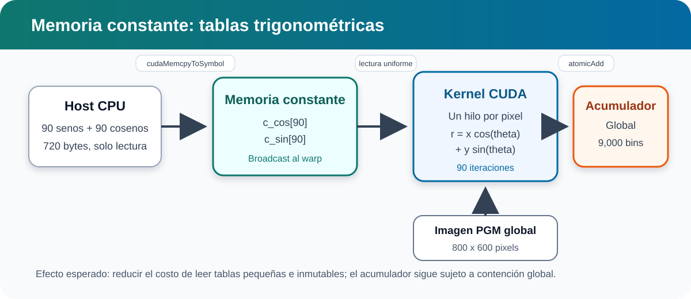
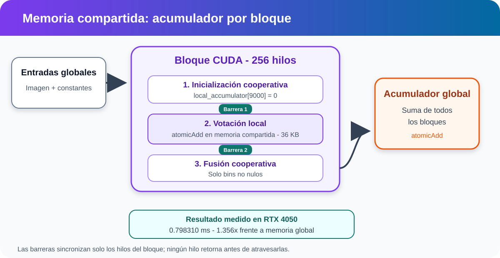
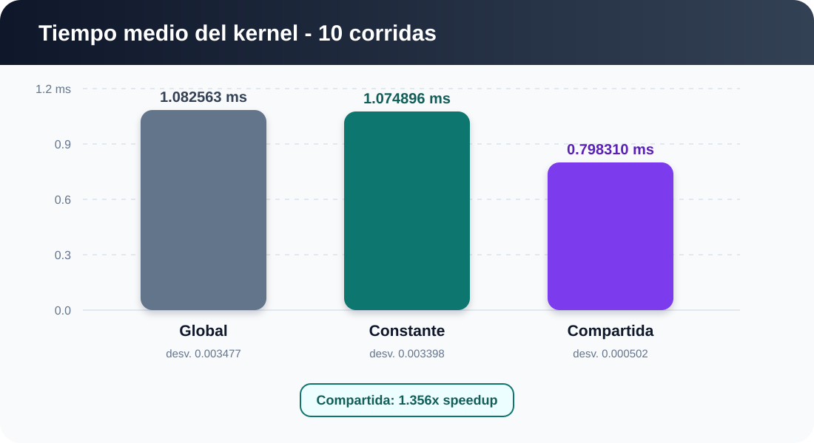
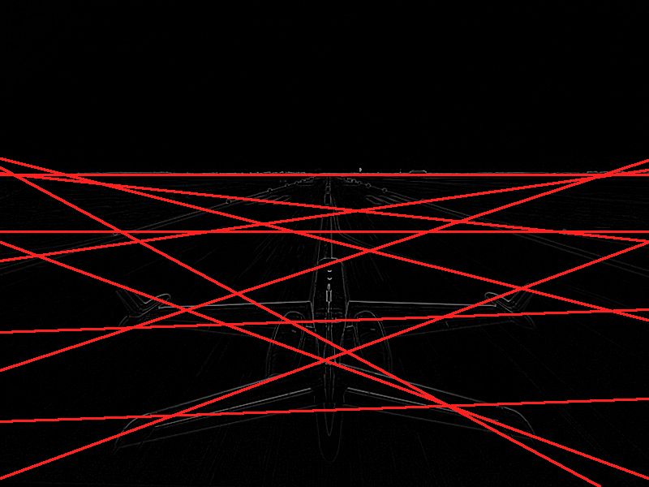

Constante
El broadcast encaja con las tablas, pero el acumulador global limita la mejora.
Comparación controlada de memoria Global, Constante y Compartida
Cada píxel activo vota por 90 ángulos posibles.
Calcular el identificador lineal del hilo.
Convertir el índice a coordenadas centradas.
Emitir 90 votos si el píxel supera el umbral.
Comparar los 9,000 bins con la referencia CPU.
global_id = blockIdx.x * blockDim.x
+ threadIdx.x;
x = global_id % width - width / 2;
y = height / 2 - global_id / width;
atomicAdd(&accumulator[r_index * kDegreeBins
+ theta_index], 1);
Imagen, tablas trigonométricas y acumulador residen en memoria global.

Los 90 senos y 90 cosenos son inmutables. Cada warp consulta el mismo ángulo y puede aprovechar el broadcast.
Resultado: 1.074896 ms, mejora de 0.71%.

Los hilos inicializan, votan y fusionan un acumulador local de 9,000 bins.
Barrera 1: termina la inicialización.
Barrera 2: termina la votación.
RTX 4050 Laptop GPU, capacidad 8.9.
Dos calentamientos fuera de la muestra.
Diez mediciones con CUDA Events por variante.
Misma imagen, grid, bloque y discretización.

| Variante | Media | Speedup |
|---|---|---|
| Global | 1.082563 ms | 1.000x |
| Constante | 1.074896 ms | 1.007x |
| Compartida | 0.798310 ms | 1.356x |
Resultado específico de esta GPU, entrada y configuración.
Los casos sintéticos verifican votos, orientaciones, umbral y un último bloque incompleto.

T = μ + 2.4σ · NMS: 4 bins en r y 3 bins en θ · umbral 3973.09
El broadcast encaja con las tablas, pero el acumulador global limita la mejora.
El acumulador por bloque reduce contención y alcanza 1.356x en la RTX 4050.
CPU, casos sintéticos y sanitizadores respaldan los resultados.
La mejor estrategia depende de la arquitectura, los recursos por bloque y la distribución de votos.